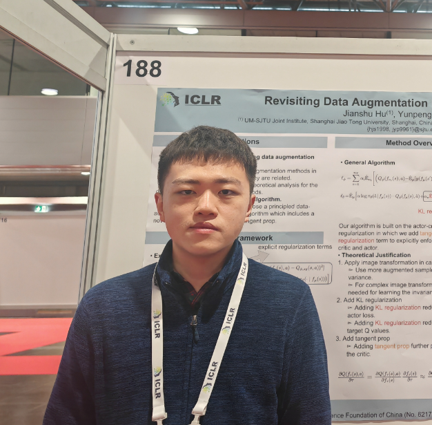
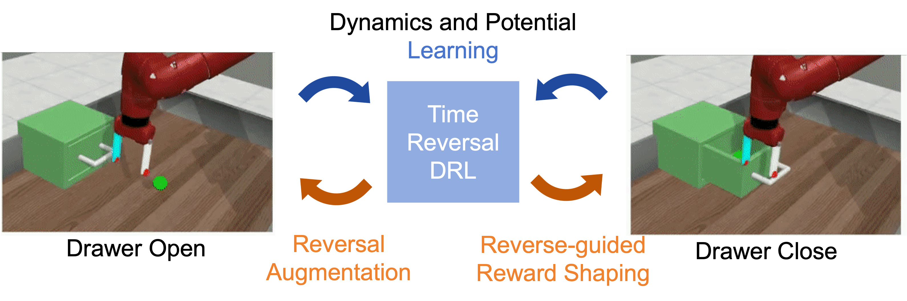
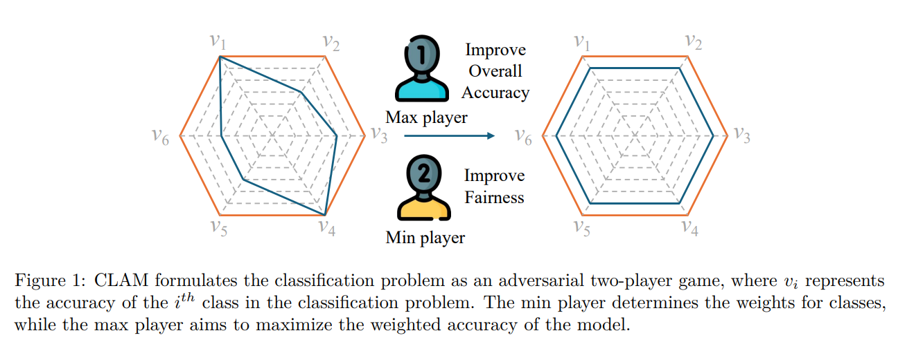
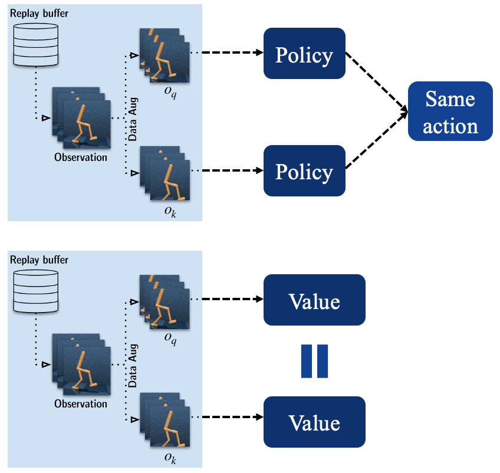
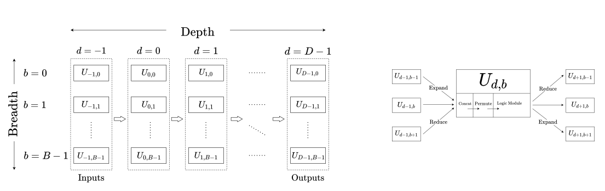

|
Yunpeng Jiang
I'm a PhD student at UM-SJTU Joint Institute in Shanghai,
working on sample-efficient deep reinforcement learning.
I am currently advised by Yutong Ban and
Paul Weng. Before my PhD studies, I completed my bachelor's degree in electrical and computer engineering at the
same institute.
Email /
Scholar /
Github
|

|
Research
I'm interested in deep reinforcement learning and robot manipulation. My current research focuses on
improving sample-efficiency of robot learning algorithms by
exploiting data augmentation and leveraging equivariance.
Some papers are highlighted.
|
|

|
Time Reversal Symmetry for Efficient Robotic Manipulations in Deep Reinforcement Learning
Yunpeng Jiang,
Jianshu Hu,
Paul Weng,
Yutong Ban,
Under Review
arXiv
We propose Time Reversal symmetry enhanced Deep Reinforcement Learning (TR-DRL), a framework that combines trajectory reversal augmentation and time reversal guided reward shaping to efficiently solve temporally symmetric tasks.
|
|

|
Understanding and Reducing the Class-Dependent Effects of Data Augmentation with A Two-Player Game Approach
Yunpeng Jiang,
Yutong Ban,
Paul Weng,
TMLR, 06/2025
arXiv,
project page
We reformulate classification using a novel variant of fair optimization and propose a multiplicative weight optimization method to reduce the class-dependent effects of data augmentation.
|
|

|
Revisiting Data Augmentation in Deep Reinforcement Learning
Jianshu Hu,
Yunpeng Jiang,
Paul Weng,
ICLR, 2024
arXiv
We make recommendations on how to exploit data augmentation in image-based DRL in a more principled way.
And we include a novel regularization term called tangent prop in RL training.
|
|

|
An Interpretable Deep Reinforcement Learning Approach to Autonomous Driving
Zhihao Song,
Yunpeng Jiang,
Jianyi Zhang,
Paul Weng,
Dong Li,
Wulong Liu,
Jianye Hao
AI4AD @ IJCAI-ECAI , 2022
pdf
We exploit a recent neuro-symbolic model called differentiable logic machine to learn an interpretable controller in the form of a first-order logic program.
We demonstrate the feasibility of our approach on two classical decision-making scenarios in autonomous driving: lane changing and intersection management.
|
|
{kind=link}